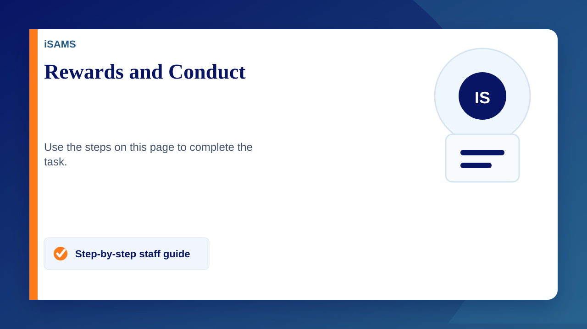
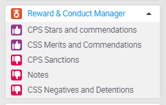
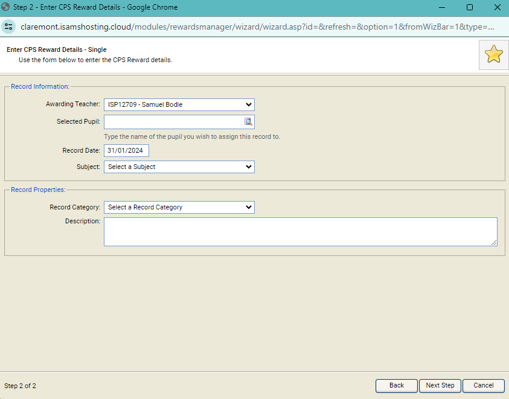

You can give a student a reward for positive behaviour or a conduct for negative behaviour by using the Rewards and Conduct wizard.
Adding Rewards & Conduct for a Student
- Click on the Reward & Conduct Manager drop down within the wizard bar
- Click on the type you wish to give
- Check the details are correct in the popup window then click next step
- Fill in the information and click next step
- When you have completed the wizard the final step confirms that the records have been saved. You can Click Add Another to start the wizard again, or Finish to exit
Note: Notifications may now be sent out to the students, parents and other staff depending on the module setup. The record may also require authorising, in which case the notifications aren't sent out until this is done.
You can also see rewards or conducts that have been given to a student in the Student Profiles module

